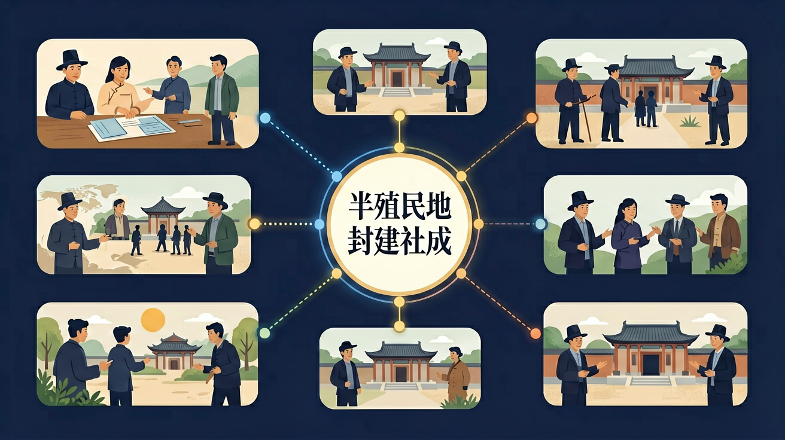

点击节点跳转到对应章节；可切换布局。
认识列强侵华对中国社会的影响，概述晚清时期中国人民反抗外来侵略的斗争事迹，理解其性质和意义；认识社会各阶级为挽救危局所作的努力及存在的局限性。

🎯 能说出半殖民地半封建社会形成的三个关键事件
🎯 能分析《南京条约》对中国社会性质的影响
🎯 能比较半殖民地与半封建特征的区别
❓ 为什么说鸦片战争是中国半殖民地半封建社会的开端？
❓ 清朝的闭关锁国政策真的完全封闭吗？
❓ 《南京条约》到底让中国失去了什么？
学完这一课，这些问题你都能自信地回答。
标志中国开始沦为半殖民地半封建社会的事件是？
下列哪项不是《南京条约》内容？
半殖民地半封建社会的形成是高中历史的重要内容。认识列强侵华对中国社会的影响，概述晚清时期中国人民反抗外来侵略的斗争事迹，理解其性质和意义；认识社会各阶级为挽救危局所作的努力及存在的局限性。
通过了解鸦片战争、甲午中日战争、八国联军侵华等重大事件，理解近代中国半殖民地半封建社会形成的历史进程。
点击时代按钮切换世界格局；结合本课主题观察空间分布。
从鸦片战争到八国联军侵华，列强通过战争与不平等条约逐步扩大侵华权益，中国主权不断丧失，同时封建生产关系仍占主导，形成半殖民地半封建的社会形态。自然经济逐步解体，近代工业与新阶层出现。
复制提示词到 AI 学伴，生成「半殖民地半封建社会的形成」的时间轴或事件提纲；也可以上传你手绘的示意图，请 AI 学伴点评。
复制后可粘贴到 AI 学伴继续对话。
判断半殖民地化的核心依据是
对比《南京条约》《马关条约》《辛丑条约》内容
按战争—条约梳理侵华加深；同时说明自然经济解体、洋务与民族资本、阶层变化。半殖民地指丧失独立，半封建指封建因素仍存又有资本主义因素。
常见误区：常见误区是把半殖民地半封建理解成“一半一半地域”，而非社会形态特征。
“半殖民地”主要指？
从政治、经济、文化三个维度分解社会性质变化
用条约内容说明主权丧失如何导致半殖民地化
对比鸦片战争前后中国社会结构的变化
通过通商口岸扩张地图观察列强势力渗透
联系当代发展中国家维护主权的案例
先独立作答，再点选项查看对错与错因。
上海外滩公园"华人与狗不得入内"的牌子最能说明
《马关条约》允许外国在华设厂，导致中国
下列现象属于半封建性的是
《____条约》签订后，清政府成为列强统治中国的工具
答案：辛丑
1901年标志完全半殖民地化
列强通过____特权控制中国海关长达半个世纪
答案：协定关税
1842年《南京条约》首次规定
（真题）下列最能体现中国半殖民地化特征的是？
（迁移）当代某国被迫接受外国驻军和关税控制，类似中国近代哪个阶段？
（辨析）半封建社会的本质特征是？
✅ 半殖民地化始于鸦片战争，半封建化是渐进过程
💡 混淆概念形成的时间差
✅ 需重点强调协定关税、领事裁判权等主权丧失条款
💡 忽视隐性主权条款
口诀：鸦片破门条约多，主权经济双失落
类比：就像租客强行改造房东房子，还收房东租金